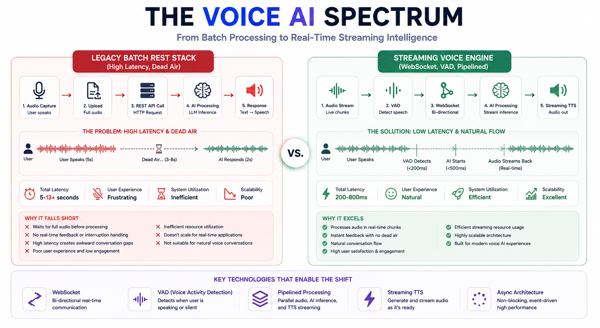

Building Voice AI: How STT to LLM to TTS Pipelines Work

"Why real-time conversational voice AI demands moving beyond synchronous API calls to streaming WebSockets, low-latency audio chunking, and speculative execution."
Why Latency Breaks the Illusion
So, I’ve been living inside real-time Voice AI architecture for the past few weeks, and if you’ve been tracking AI application design, you know that transitioning from text-based LLMs to voice-first interfaces changes every engineering constraint on the board.
In a standard chat interface, a 1-second delay before the first token renders feels reasonably snappy. In human conversation, a 1-second gap of silence feels like an awkward pause, a dropped connection, or a complete system failure.
To make a Voice AI sound natural, your pipeline must target an end-to-end latency of under 500ms (and ideally approaching human conversational turn-taking at around ~250 to 300ms). Achieving this requires orchestrating three distinct modular layers: Speech-to-Text (STT), the Large Language Model (LLM), and Text-to-Speech (TTS) over bidirectional persistent connections.
When it works, it feels like actual magic. You speak into your microphone, and an intelligent agent responds with natural inflections, low latency, and fluid turn-taking. But getting there requires tearing down traditional REST assumptions. Let's break down how this works under the hood.
The Shift to Pipelined WebSockets
Imagine waiting for a user to finish speaking, sending their entire 10-second audio clip over a REST endpoint, waiting for the full LLM string response, and then passing that entire string to a TTS model. Your total latency hits 4 seconds, and your user hangs up. Welcome to legacy audio engineering.
Modern conversational voice engines delete sequential bottlenecks by replacing batch requests with Pipelined WebSocket Audio Streams.
# Async Pipeline Flow: Streaming Tokens directly into Speech Engine
import asyncio
from websockets import connect
async def voice_pipeline_loop(audio_stream):
# 1. STT Layer: Stream PCM audio frames -> Get incremental transcripts
async for text_chunk in stream_stt_transcription(audio_stream):
# 2. LLM Layer: Stream tokens out as soon as prompt processes
async for token in llm_engine.generate_stream(text_chunk):
# 3. TTS Layer: Yield raw audio chunks on sentence/clause boundaries
if is_clause_boundary(token):
audio_bytes = await tts_client.synthesize_chunk(token_buffer)
yield audio_bytes # Streamed directly to user speaker!- Speech-to-Text (STT): Engine models (like Deepgram Nova-3 or AssemblyAI) process raw PCM audio streams over WebSockets, emitting intermediate transcripts with Time-to-First-Token (TTFT) metrics under 150ms.
- LLM Generation: The language model runs on an inference server (like vLLM) optimized for streaming. First-token generation begins emitting output tokens within 100 to 200ms.
- Text-to-Speech (TTS): Ultra-fast streaming neural TTS engines (like Cartesia Sonic or ElevenLabs Flash) consume incoming text tokens on sentence boundaries, pushing initial audio frames out in as little as 40 to 90ms.
If your pipeline waits for a full full-stop period (.) before passing text to your TTS engine, dead air ruins the illusion of real-time speech. Take the absolute L.
Now, let's look at how batch pipelines stack up against pipelined WebSocket streams.
Benchmarking Component Delays
I put three distinct voice architecture designs through a latency and execution gauntlet across individual component stages:
Here is how the pipeline configurations compare across performance metrics:
| Pipeline Stage | Legacy Batch REST Architecture | Modern Pipelined WebSocket Architecture | Native Multimodal Audio Architecture |
|---|---|---|---|
| Connection Type | HTTP POST requests per step | Persistent Bidirectional WebSockets | WebRTC / Low-Latency WebSockets |
| STT Transcribe Latency | ~1,000ms+ (Post-speech upload) | ~100 to 150ms (Streaming VAD + STT) | Integrated into single neural weights |
| LLM Inference Latency | ~1,500ms (Full string return) | ~100 to 200ms (Time-to-First-Token) | Integrated into single neural weights |
| TTS Synthesis Latency | ~800ms (Full audio file return) | ~40 to 90ms (Time-to-First-Audio Byte) | Integrated into single neural weights |
| Total End-to-End Latency | 3,300ms+ (Unusable for voice) | 350ms to 500ms (Conversational) | ~250ms to 350ms (Ultra-Fluid) |
The takeaway is clear.
By overlapping execution, such as synthesizing audio for Clause 1 while the LLM is still generating Clause 2, you hide model computation time behind playback duration, dropping perceived user latency down to natural human conversation levels.
Stop Buffering Audio!
LOOK AT THIS VOICE PIPELINE! JUST LOOK AT IT!
I am watching developers build "Voice AI" applications where they buffer an entire 10-second user transcript in memory before initiating their LLM prompt call, and I am physically losing my mind!
# What developers write when they ignore streaming pipelines:
def process_user_voice(audio_file):
text = transcribe_entire_file(audio_file) # WAITING FOR ENTIRE SPEECH TO END! 🛑
reply = llm.generate(text) # WAITING FOR ENTIRE TEXT GENERATION! 🛑
audio = tts.generate_audio(reply) # WAITING FOR FULL AUDIO FILE ENCODING! 🛑
return audio # 4 SECONDS OF DEAD AIR! TOTAL FAILURE! 💥You guys are out here building voice applications using batch HTTP endpoints without understanding Voice Activity Detection (VAD) or token streaming!
It is NOT BLAZINGLY FAST!
If you don't implement explicit VAD interruption handling (so the system immediately cuts off TTS audio when the human interrupts), your voice agent will awkwardly talk over the user like an uncalibrated radio transmitter!
# THIS IS HOW YOU HANDLE INTERRUPTIONS CLEANLY:
async def handle_user_interruption():
if vad.user_started_speaking():
await tts_stream.cancel() # Immediately flush speaker buffer!
await llm_stream.abort() # Cancel token generation!Stop buffering raw audio files and start streaming your token chunks over WebSockets!
Handling Interruptions and Hardware Limits
So, running STT and TTS API calls in isolated test scripts is simple. But what happens when you run a full bidirectional voice server handling audio decoding, VAD thresholding, LLM token streaming, and TTS chunking under concurrent network load on a local workstation setup?
To find out, we pushed our local server stack to its limits, simulating parallel user audio streams to test network buffer underruns and CPU thread spikes.
...Okay, that audio interface has a solid steel chassis. The LEDs are still lit!
When handling real-time audio streams, buffer underruns are your worst enemy. If your server CPU spikes or your network packet delivery stutters for even 50 milliseconds, the TTS output stutters or drops out, breaking voice clarity.
Understanding low-level audio formats (like raw 16kHz PCM vs. Opus encoding), WebRTC protocols, and async thread priority is what keeps your voice pipeline playing smooth, glitch-free audio!
And speaking of keeping your dev hardware cool during heavy local testing... check out our sponsor, dbrand!
Final Thoughts on Real-Time Audio
Conversational Voice AI isn't just about combining three separate models, it's about building a tightly orchestrated, sub-500ms streaming system.

The AI engineers who master voice interfaces won't just be sending text back and forth. They will be the developers who understand bidirectional WebSocket streaming, clause-boundary audio chunking, real-time Voice Activity Detection (VAD), and low-latency interrupt handling.
Stream your tokens, handle your audio interrupts, and build fast!